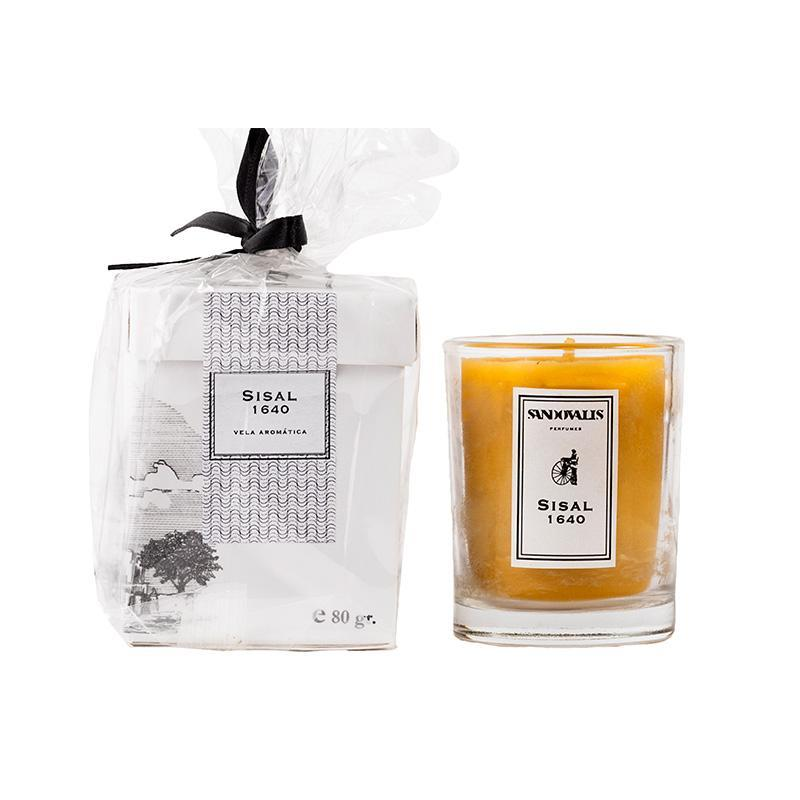

La Vela Sisal de Sandovalis es una vela aromática con un sobrio perfume inspirado en la mezcla de la brisa y el viento que abrazan el antiguo fuerte de Santiago de Sisal en Yucatán, lugar en donde un grupo de voluntarios logró expulsar un ataque pirata y se muestra como joya arquitectónica que sobrevivió hasta hoy en día. Está elaborada con cera de abeja 100% natural, ingrediente que representa la trascendencia comercial, religiosa y ritual en la cultura maya, sus notas florales y cítricas construyen una experiencia de iluminación única. Notas de salida: limón y flor de azahar Notas de corazón: cedro Notas de fondo: rosas de Castilla
